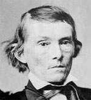

|

|

|
|
|
Congressman, author and Confederate vice-president Alexander
Hamilton Stephens was born into a prosperous Georgia farming family.
Small and sickly as a child, he remained fragile throughout
his life. Stephens never knew his mother, who died of
pneumonia a few months after giving birth. His father
remarried, but at the age of 14 Stephens was left an orphan
when both his father and stepmother died within a few months
of each other. After his parents' death, Stephens was
adopted by his uncle, who saw to it that that the young man
received an education. He enrolled at Franklin College in
1828, and in 1832 graduated first in his class. After a
briefly working as a teacher, Stephens studied law. He was
admitted to the bar, and soon thereafter was elected to the
Georgia state legislature. For the rest of his life,
Stephens devoted himself entirely to politics. He maintained
few close friendships, and he never married.
Stephens' time in the state legislature helped him to
develop the political philosophy that would guide him for
the rest of his life. He came to identify with the southern
wing of the newly formed Whig party, which meant that he
favored federally-sponsored internal improvements,
government protection of slavery, and compromise whenever
necessary. Stephen served for six years in the legislature
before deciding to run for Congress in 1843 as a Whig. He
attracted national attention for his campaign speeches
defending the Whig positions on the tariff and national
bank, and he won election by a comfortable margin.
Although gravely ill for much of his first term, Stephens
rapidly became an important leader of the Whig party in
Congress. In that capacity, he befriended fellow Congressman
Abraham Lincoln, with whom he carried on an active
correspondence for two decades. Stephens worked hard for a
variety of Whig causes, but he was most important in helping
to secure passage of the Compromise of 1850 and the
Kansas-Nebraska Act of 1854. In helping these bills to
become law, however, Stephens found himself a man without a
party. The Whigs collapsed in the early 1850s, as the
southern and northern wings of the party became divided over
the issue of slavery. Stephens operated as an independent
for a short time before deciding to join the Democratic
Party. He did not strongly identify with the philosophy of
the party, but he felt they were a more attractive option
than the Know-Nothing Party or the newly formed Republican
Party.
Stephens served as a Democrat in Congress for a few
years, but became increasingly frustrated with the
infighting between southerners and northerners in the
Democratic Party. In 1859, he finally retired from Congress
in disgust and returned home to Georgia. When Abraham
Lincoln was elected the next year, Stephens urged his fellow
Georgians to remain with the Union and to try to find a
compromise. His cooperationist pleas fell on deaf ears,
however, and Georgia left the Union. Once the issue was
decided, Stephens bowed to his state's wishes and became a
devoted Confederate. He helped draft Georgia's secession
ordinance, and he played an important role at the
Confederate Constitutional Convention. When it came time for
the Convention to choose the leaders of the new government,
they selected Jefferson Davis for the presidency and
Stephens for the vice-presidency. The convention's goal in
making these choices was to unify different factions in the
South. Stephens, as a prominent cooperationist and former
Whig, was a natural complement to Davis, a prominent
secessionist and former Democrat. Stephens accepted the
assignment, and was sworn in as provisional vice-president
on February 9, 1861. The pair was then elected officially on
November 6, 1861.
The differences in philosophy that had made Davis and
Stephens an attractive political pairing quickly proved
disastrous for their working relationship. Problems began to
appear as early as March of 1861, when Stephens gave an
address in Savannah arguing that slavery was the
"cornerstone" of the Confederacy and that the main reason
the war was being fought was to protect the institution. The
speech directly contradicted Davis' stated position that the
war was about states' rights. Davis was furious that
Stephens was so brazenly undermining his administration, and
he began to exclude Stephens from day-to-day operations of
the government. Stephens and Davis continued to disagree on
government policies -- Stephens was strongly opposed to
conscription while Davis was strongly in favor; Stephens
advocated peace overtures while Davis insisted on fighting
until independence has been achieved; Stephens favored a
stiff income tax while Davis preferred to finance the war by
printing money. By the middle of 1862, Stephens was being
almost completely ignored by Davis, and his only remaining
responsibility was to preside over the Senate, where he
could neither speak nor vote. Frustrated by his irrelevance,
Stephens returned to Georgia, where he remained for most of
the war. He did accept several special assignments,
including leading unsuccessful peace delegations in 1863 and
1865. In both cases, Stephens felt he has been set up to
fail, and his dislike of Davis deepened.
At the conclusion of the war, Stephens was arrested and
briefly imprisoned. Shortly after his release, Stephens was
elected to Congress, but along with other ex-Confederates
was barred from taking his seat. Temporarily unable to
participate in public life, Stephens turned his attention to
writing the two-volume A Constitutional View of the Late
War Between the States, published between 1868 and 1870.
The book provided a detailed legal justification of
secession and the Southern states' pre-war view of their
place in the Union. Shortly after Stephens finished the
book, he ran for office again. By this time the political
climate of the nation had changed, and he was allowed to
regain his seat as a representative from Georgia. Stephens
remained in Congress from 1873 until 1882, when he was
elected governor of Georgia. He only served a short time
before taking ill and dying in Savannah on March 4, 1883.
Source: Joan Waugh, ed., Facts on File Encyclopedia of American
History: Civil War and Reconstruction, 1856 to 1869 (New York: Facts on
File, 2003), 336-337.
|